Spring与Redis整合
如果你学过Redis，应该知道它是一个键值对的内存数据库应用，一般是作为服务器后端中的数据库或者是缓存来使用（国内大环境下用作缓存更多）。
Redis作为数据库使用
这里主要介绍两个比较常见的Redis操作库，Jedis和SpringDataRedis
Jedis
Jedis是一个小巧、简单、易用的Redis client，Java导入Jedis依赖后，可以直接对Redis进行连接，并直接操作各种数据结构。
可以使用下面的pom依赖导入Jedis。
1 | <dependency> |
在Spring环境下，Jedis可以类比成一个JDBC的Connection，你可以通过这个Connection对Redis进行各种操作，那么就很容易写出这样的代码。
首先进行配置，将Jedis配置为Bean，在构造对象时，提供redis的服务器地址和端口号。
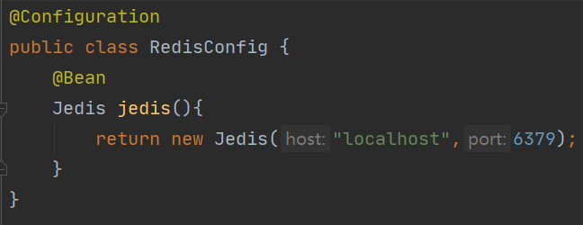
使用的时候，注入Jedis的bean即可，随后就可以通过jedis对象操作redis了。
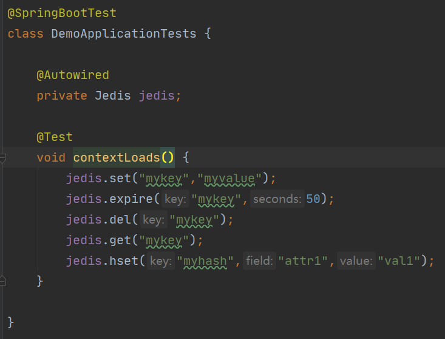
SpringDataRedis
SpringDataRedis是SpringData这个大项目中的一个子项目，与Spring高度集成，是我们在Spring项目中整合Redis的不二之选。
使用SpringDataRedis，我们可以至少可以获得以下好处。
- 自由选择Redis连接器，比如jedis、jredis、lettuce
- 通过预先配置的RedisTemplate，直接进行Redis操作，免去了创建、释放连接的过程，与JdbcTemplate作用类似
- 可以自由选择数据序列化的方式
- 提供了对SpringCache整合Redis的支持，后面会讲到
那么Jedis和SpringDataRedis的关系也就明朗了，SpringDataRedis底层使用的是redis client，比如jedis、jredis、lettuce这样的，即SpringDataRedis是对jedis这种连接器的一种封装。
SpringDataRedis的依赖
SpringDataRedis可以通过以下的SpringBoot起步依赖引入。
1 | <dependency> |
SpringDataRedis的官方文档上介绍的引入方式是这种。
1 | <dependency> |
这两种方式有什么不一样？很简单，看一下spring-boot-starter-data-redis是怎么构成的。
1 | <dependencies> |
实际上就是spring-boot-starter、spring-data-redis和lettuce-core这三个依赖组成的，同时也可以发现，SpringDataRedis默认使用的是lettuce作为连接器。
SpringDataRedis的使用
连接到Redis
与Jedis类似，我们需要提供一个预设的连接配置。在SpringDataRedis中，负责连接到Redis的主要有两个类，RedisConnection和RedisConnectionFactory，从名字就可以看出，我们实际上是对RedisConnectionFactory提供配置，这个Factory根据我们提供的Redis连接配置，生产RedisConnection。
SpringDataRedis默认选择的Redis连接器是Lettuce，这里需要注意一下，虽然Java有多种Redis连接器，但并非所有的连接器都支持Redis的所有特性，具体可以参考SpringDataRedis官方文档的连接。
配置一个Lettuce实现的RedisConnectionFactory，如下所示。
1 |
|
使用RedisTemplate
RedisTemplate是SpringDataRedis的核心组件，它高度封装的特性可以让我们不需要关心序列化的过程而直接将Java数据类型写入Redis。
虽然RedisConnection也可以操作Redis，但相比与RedisTemplate，它们操作数据的层次不一样，RedisConnection提供偏向底层的Redis操作，即直接操作二进制数据；而RedisTemplate处于一个高层的位置，序列化Java对象后调用RedisConnection写入Redis。
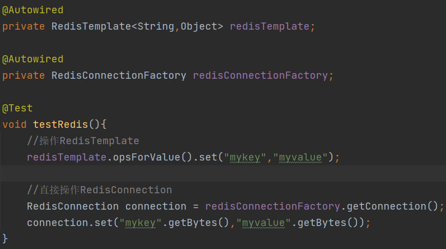
可以看到，上面用了RedisTempalte的opsForValue方法，实际上，它还能使用其他的operation，以下摘自SpringDataRedis官方文档。
| Operation | 描述 |
|---|---|
GeoOperations |
操作geo类型, 比如GEOADD, GEORADIUS |
HashOperations |
操作hash类型 |
HyperLogLogOperations |
操作HyperLogLog, 比如PFADD, PFCOUNT |
ListOperations |
操作list类型 |
SetOperations |
操作set类型 |
ValueOperations |
操作一般的键值对类型，即字符串 |
ZSetOperations |
操作zset类型 |
除了以上这些Operation，为了方便使用，还可以将一个特定的key绑定到Operation上，比如下面这样，如此一来，这个Operation专门就是为mykey这个键进行服务的了。
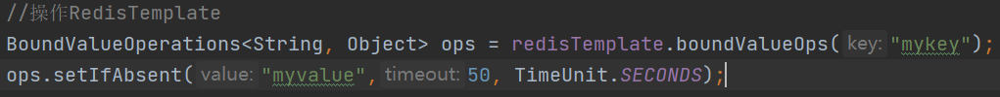
RedisTemplate的序列化机制
使用RedisTemplate时，默认使用的是jdk序列化，即如果你想存一个自定义对象，那么应该让其实现Serializable接口，否则jdk是无法进行序列化的。
如果不想使用SpringBoot预配置的RedisTemplate，那么我们可以自己决定序列化方式。
下面是几种常见的序列化器。
- JdkSerializationRedisSerializer：基于Jdk的序列化器，RedisTemplate默认使用的
- StringRedisSerializer：将key或者value序列化成字符串，存进redis时是人可读的
- Jackson2JsonRedisSerializer：将对象序列化为json格式
在配置RedisTemplate时，可以自行设置序列化方式。
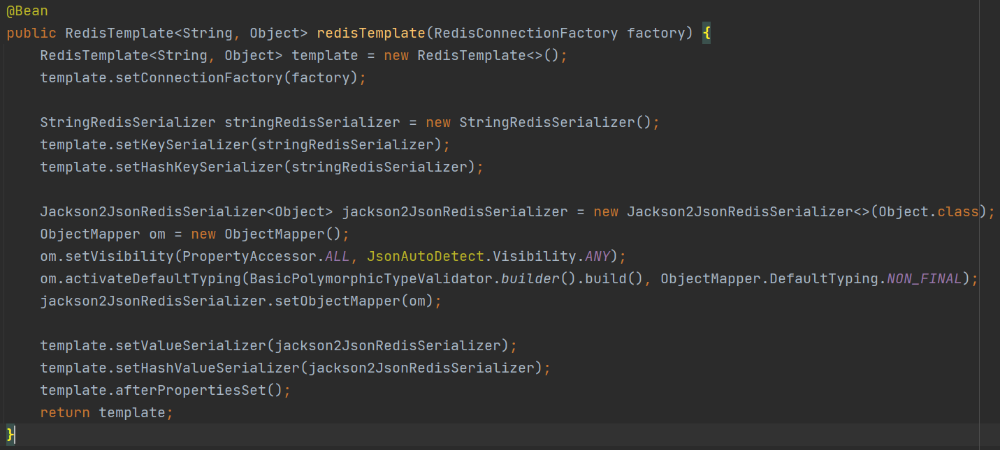
上面的例子中，设置了普通的键和hash类型的键使用StringRedisSerializer，普通的value和hash的value使用Jackson2JsonRedisSerializer，上面这个例子中对json序列化过程也进行了一定的定制，即设置ObjectMapper，设置对象映射可见性为所有，其他的取值可以参照下图。
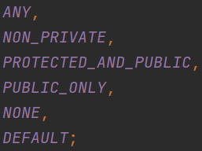
activateDefaultTyping方法则是设置了序列化过程中，将对象中的所有字段类型也一并作为信息写入。
RedisTemplate的afterPropertiesSet可以不调用，如果对其源码感兴趣可以自行阅读，这里就直接说了，它可以检查RedisTemplate中的key和value的序列化器是否都已设置妥当，若没有设置，则启用默认的序列化器，即Jdk序列化器。
RedisRepository
如果你接触过SpringDataJPA，那应该知道JPA的持久化套路，主要是以下几步。
- 定义Entity类，即实体类，比如User这样的
- 定义Repository类，这种可以理解为实体类专属的查询工具，比如UserRepository就是用来对User实体增删改查的
- 调用Repository类的方法对Entity操作，比如userRepository.save(user)
实际上SpringDataRedis也提供了一套这样的持久化方式，相较于直接使用RedisTemplate操作，通过Repository进行操作要简单不少。
定义RedisHash类
首先，假设我们要将Book类持久化到Redis中，那么这样定义。
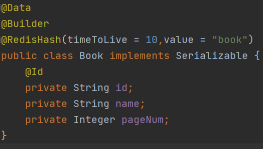
首先需要在Book类上添加@RedisHash注解，作用可以类比为JPA的Entity注解，如此Book类就能以hash数据类型被持久化到Redis中，两个参数分别为key生存时间（单位为秒）和key的前缀。
其次可以看到，属性中有一个id属性，用@Id注解标注，对SpringDataRedis来说，这种id属性是辅助前缀生成key的重要标识，比如上图中的Book类，@RedisHash中的value是book，有一个id属性，那么存储一个Book对象时，产生的redis key就是book前缀+id。
注意Book还打上了Serializable接口，这是因为没有更改默认配置，那么默认使用的是Jdk序列化方式，这个前面已经说到过了。
定义Repository类
随后要定义一个BookRepository，它必须是interface类型，且继承CrudRepository接口。
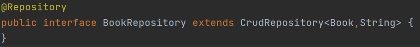
从上图可以看到，CrudRepository的泛型声明是由两个类型组成的，第一个Book，即需要持久化的类，第二个类型是id字段的类型，我自定义的Book类中使用的id是String类型，那这里就要写String。
开启RedisRepositories注解
还需要在SpringBoot启动类或者配置类上加上@EnableRedisRepositories注解，才能开启该功能。
使用RedisRepository
这里以存储方法为例，直接调用bookRepository的save方法即可，注意id可以不设置，SpringDataRedis会自动产生一个id。
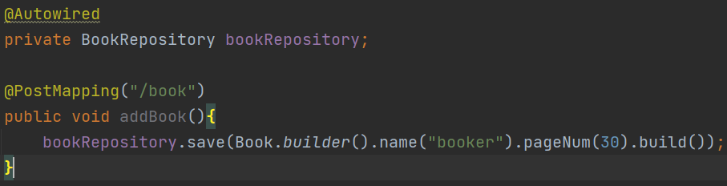
Redis作为缓存使用
虽然RedisTemplate和RedisRepository可以让我们将Redis当成内存数据库使用，但国内大环境下，Redis应用环境仍然是缓存比较多，Spring也提供了缓存支持，下面就讲讲Spring的缓存机制以及如何与Redis整合。
如果某个方法特别耗时，或者占用的计算机资源过高，则可以使用缓存注解对这些方法标注，下次再执行这个方法，就不需要从头执行了，只需要从缓存中取出相应的数据。
SpringCache
Spring提供了几个缓存相关的注解，如下。
- Cacheable
- CacheEvict
- CachePut
- Caching
SpringCache的作用主要是给Java方法提供缓存，即上面这些注解，一般是用在方法上的，在方法触发时，对缓存数据执行相应的操作，比如将方法返回值放进缓存或者删除缓存中的某个数据等等。
以上注解实际上只是一个缓存的抽象，底层究竟如何存储缓存，这就需要引入缓存实现的概念。
依赖
Spring提供了几种缓存实现，比如基于ConcurrentHashMap的缓存、Ehcache、Gemfire、Caffeine。
如果你引入了spring-boot-starter-cache，那么默认使用的是ConcurrentHashMap实现；如果你想使用SpringCache的Redis实现，那么还需要引入spring-boot-starter-data-redis。
配置
如果你的项目引入了spring-boot-starter-data-redis，那么默认的连接属性是连接到localhost的6379端口，可以通过覆盖配置来修改。
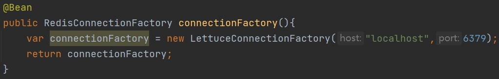
或者也可以直接在application.properties中设置。
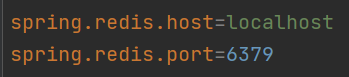
由于序列化Java对象默认使用的Jdk序列化，自定义类需要实现Serializable接口才能进行缓存；如果你想要将其存转换为json格式的数据，需要配置一个Jackson序列化器来覆盖默认的Jdk序列化器，然后将其设置给RedisTemplate。
下面给出我自己现在用的一套RedisTemplate设置，由于我的项目中还需要保存ZonedDateTime，这里也对时间转换进行了一些定制化，你可以根据自己的需要参考。
1 |
|
最终还需要开启Spring缓存支持，使用@EnableCaching注解对启动类或者配置类进行标注即可。
缓存注解
前面在介绍SpringCache的时候就说到了Spring提供的几种缓存注解，即Cacheable、CacheEvict、CachePut、Caching，下面就讲讲这些注解的作用。
| 注解 | 描述 |
|---|---|
| @Cacheable | 在方法调用之前，先在缓存中查找对应的值，若不存在，调用方法，将结果放到缓存中；若相应的值存在，直接返回，不执行方法。 |
| @CachePut | 方法执行完成后，将结果存放到对应的缓存中，不会检查是否有对应的缓存，方法始终会执行，是一个单纯的写入注解。 |
| @CacheEvict | 从缓存中清除一个或多个条目。 |
| @Caching | 一个总和性的注解，里面可以包含Cacheable、CachePut、CacheEvict |
写入缓存
Cacheable和CachePut注解都可以往缓存中存值，但两者执行机制是不同的。
它们的属性类似。
| 属性 | 类型 | 描述 |
|---|---|---|
| value | String[] | 缓存名称，不同名称的缓存是相互隔离的 |
| condition | String | Spel表达式，得到false，则缓存对当前方法不生效 |
| key | String | Spel表达式，计算自定义的缓存key |
| unless | String | Spel表达式，如果得到的是true，返回值不会放到缓存中 |
自定义key
当一个方法要把返回值存进缓存中时，是根据key来存的，如果不指定key属性，则使用传给方法的所有的参数来生成key，而如果指定了，则使用自定义的Spel来生成key，Spring向外暴露了一些元数据，使我们可以方便的通过Spel表达式来计算自定义的key。
| 表达式 | 描述 |
|---|---|
| #root.args | 传递给缓存方法的参数，为数组 |
| #root.caches | 该方法对应的缓存名，为数组 |
| #root.target | 缓存目标对象 |
| #root.targetClass | 目标对象的类，相当于#root.target.class的简写 |
| #root.method | 缓存方法 |
| #root.methodName | 缓存方法的名字，相当于#root.method.name的简写 |
| #result | 方法调用的返回值（不能用在Cacheable注解上） |
| #Argument | 任意方法参数名（注意是参数名，不是参数值） |
比如下面这个例子中，我只想用一个参数名来产生缓存，可以这样写。
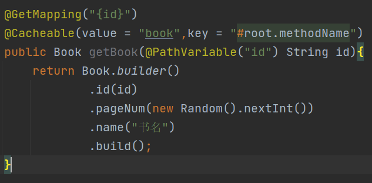
条件化缓存
Cacheable和CachePut注解都有属性condition和unless。
condition：如果Spel表达式计算为true，则检查缓存中是否存在对应的值，存在就返回，不存在就存入；如果为false，直接执行方法，也不会去存入缓存，就跟没设置Cacheable注解一样。
unless: 如果Spel表达式为true，则不会将返回值存入缓存。从这个属性的功能上就可以看出来，unless只是用来阻止写入的，并不能用来阻止读取缓存。
比如下面这个例子，condition为#pageNum>0，即只有当方法参数pageNum>0时，这个缓存生效;unless为#name==null，即，只要方法参数name为null，就不写入缓存。如果name为null并且pageNum大于0，是不写入缓存的；如果name不为null，但pageNum小于等于0，那么也不会写入缓存。
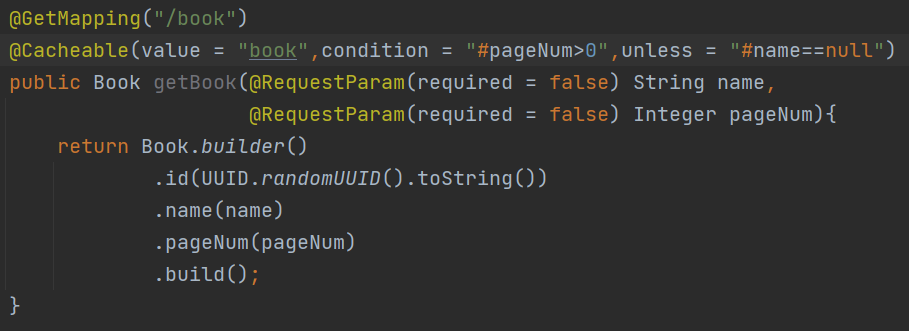
关于缓存名称
不同缓存名称之间是相互隔离的，比如下面这个例子中，两个方法除了cacheNames其他属性完全一样。
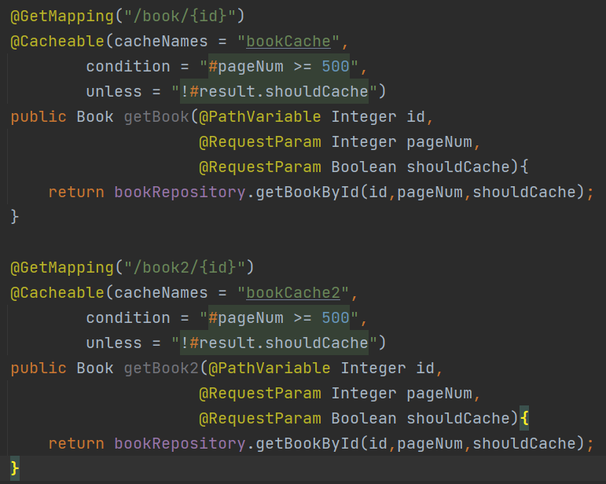
这里给出bookRepository的实现，它实际上并不是个JPA查询，只是简单的返回一个new出来的对象，可以预测的是，如果缓存命中了，那么应该输出”执行了数据库查询”。
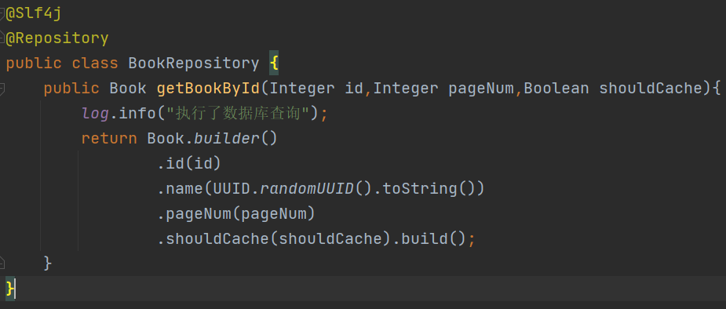
调用第一个方法，结果如下，说明第一次缓存没有命中，cacheManager往缓存中存入了Book对象。
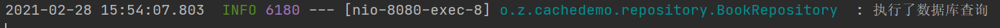
再次访问第一个方法，发现没有输出，说明缓存命中。
调用第二个方法，提供的参数完全与前面一致，发现输出了一次，说明没有命中，此时验证成功–不同name的缓存确实是相互隔离的。
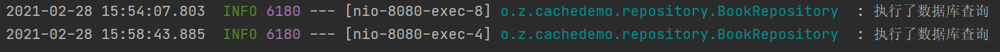
移除缓存条目
使用CacheEvict可以从某个缓存中移除一条或多条数据。
| 属性 | 类型 | 描述 |
|---|---|---|
| value | String[] | 缓存名称 |
| key | String | Spel表达式，计算自定义key |
| condition | String | Spel表达式，如果是false,则该方法不会应用缓存 |
| allEntries | boolean | 如果为true，则删除该缓存的所有条目 |
| beforeInvocation | boolean | 如果为true，在方法调用之前移除key；如果为fasle，则方法调用后移除key |